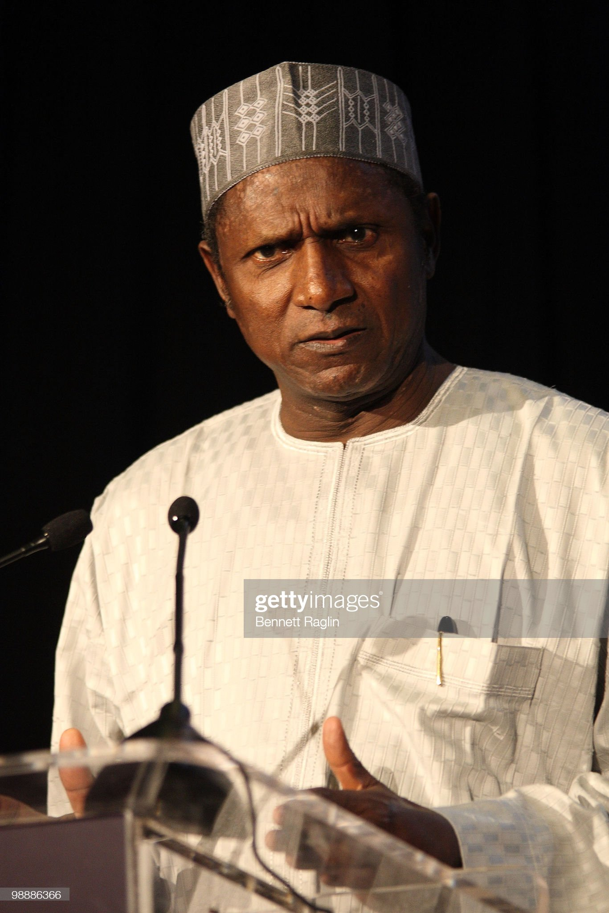

President Umaru Musa Yar'adua

Late President Umaru Mua Yar'adua giving a speech
Umaru Musa Yar'Adua
(16 August 1951 – 5 May 2010)
He was the 13th president of the
Federal Republic of Nigeria.
He was governor of Katsina State in northern Nigeria
from 29 May 1999 to 28 May 2007.
He was declared the winner of the controversial
Nigerian presidential election held on 21 April 2007,
and was sworn in on 29 May 2007.
He was a member of the
People's Democratic Party (PDP).
2009, Yar'Adua left for Saudi Arabia
to receive treatment for pericarditis.He returned to Nigeria on February 2010,
where he was pronounced dead on the 5th of May
To read more about President Yar'adua...Click here